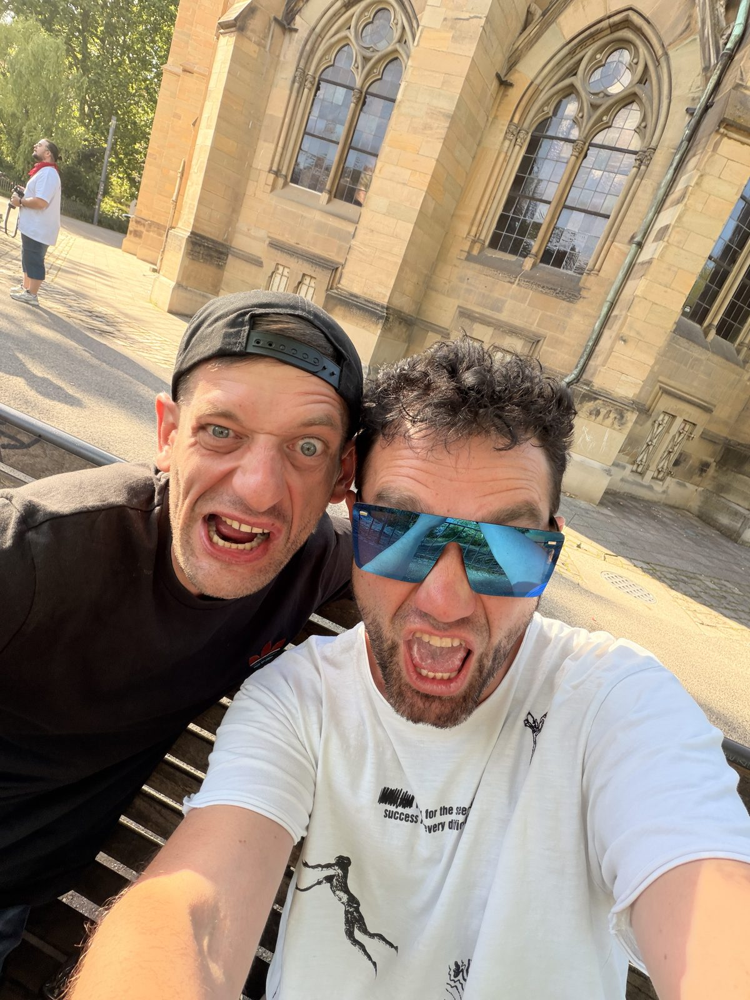
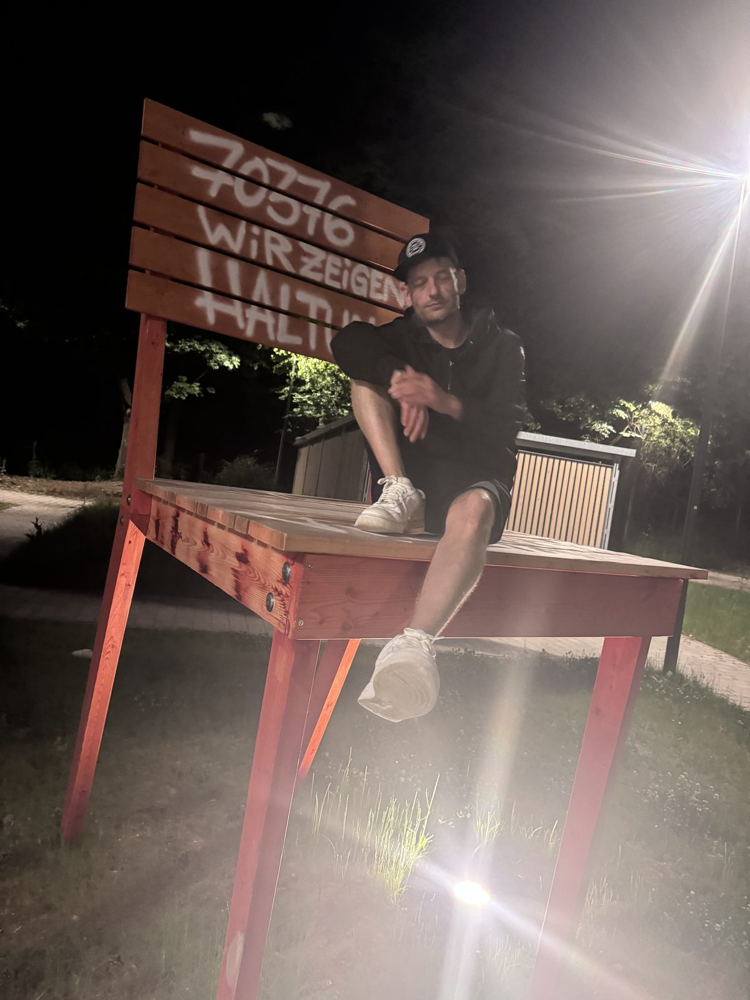
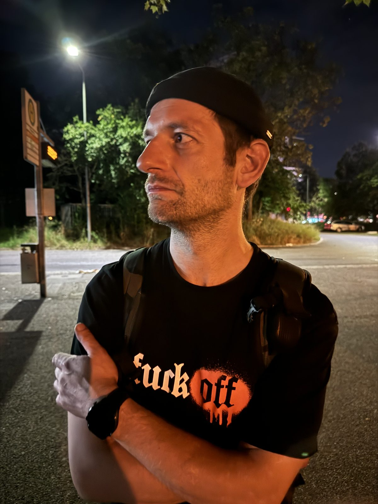
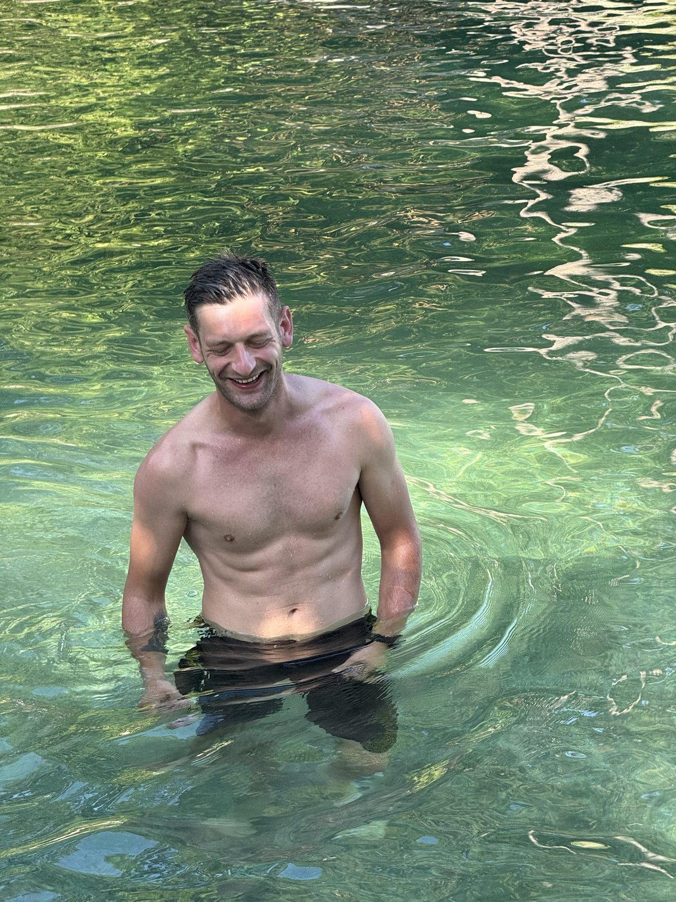
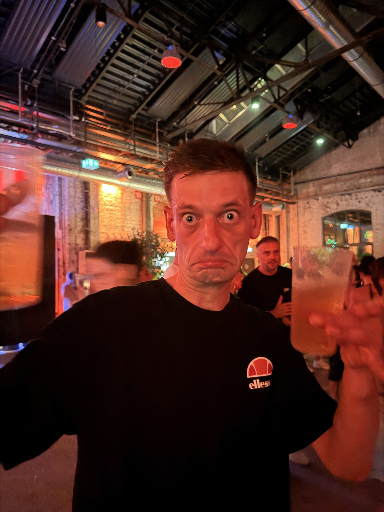

Прощание
Abschied
Церемония открыта для всех, кто знал и ценил Ярослава
Die Trauerfeier ist offen für alle, die Yaroslav kannten und schätzten
Церемония прощания
Trauerfeier
10.07.2026 · 10:00
Ramsaier Bestattungen GmbH Katzenbachstraße 58 70563 Stuttgart-Vaihingen
Открыть на картеAuf der Karte öffnenПоминальный обед
Leichenschmaus
10.07.2026 · 13:00
Julius-Hölder-Straße 43 70597 Stuttgart-Degerloch
Открыть на картеAuf der Karte öffnenВ этот день мы хотим вместе почтить его память, вспомнить светлые моменты и проводить его в последний путь. Каждый, кто знал его, ценил или хочет проститься, — искренне желанный гость.
An diesem Tag möchten wir gemeinsam innehalten, uns erinnern und ihm die letzte Ehre erweisen. Jeder, der ihn kannte, schätzte oder sich verabschieden möchte, ist von Herzen willkommen.
Сообщить о присутствии
Teilnahme mitteilen
Чтобы семья могла всё подготовить, пожалуйста, дайте знать, придёте ли вы
Damit die Familie planen kann, gib bitte kurz Bescheid, ob du kommst
Напишите, планируете ли вы быть на церемонии прощания и / или на поминальном обеде, и сколько вас будет.
Schreib uns, ob du zur Trauerfeier und / oder zum Leichenschmaus kommst und mit wie vielen Personen.
Ответить в WhatsAppPer WhatsApp antwortenИли просто ответьте тому, от кого вы получили ссылку на эту страницу.
Oder antworte einfach der Person, von der du den Link zu dieser Seite bekommen hast.
Поддержать семью
Die Familie unterstützen
По желанию — любая помощь принимается с благодарностью
Freiwillig — jede Hilfe wird dankbar angenommen
Николь, родная сестра Ярослава, организовала сбор средств на организацию прощания и похорон. Если вы хотите поддержать семью, это можно сделать через PayPal.
Nicole, Yaroslavs Schwester, hat eine Spendensammlung für die Trauerfeier und Beerdigung organisiert. Wer die Familie unterstützen möchte, kann das über PayPal tun.
Перейти к сбору (PayPal)Zur Spendensammlung (PayPal)Сумма — любая. Важен не размер, а участие.
Jeder Betrag zählt. Es geht nicht um die Höhe, sondern um die Geste.
Моменты
Momente
Таким мы его помним — живым, весёлым, настоящим
So erinnern wir uns an ihn — lebendig, fröhlich, echt





Его словами
In seinen Worten
Из его сообщений — таким он был в каждом дне
Aus seinen Nachrichten — so war er, jeden Tag (Originale auf Russisch)
«Это мы с тобой. Против всего мира.» „Das sind wir zwei. Gegen die ganze Welt.“
«Я выиграл с тобой уже лотерею по жизни.» „Mit dir habe ich im Leben schon die Lotterie gewonnen.“
«Делать то, что любишь. А не то, что надо.» „Das tun, was man liebt. Nicht das, was man muss.“
«Чем громче падаешь — тем быстрее встанешь.» „Je lauter du fällst, desto schneller stehst du wieder auf.“
«Упал, встал и идёшь дальше. Так и живём, бро.» „Hinfallen, aufstehen, weitergehen. So leben wir, Bro.“
«Я хоть и далеко, но поверь — как рядом.» „Ich bin zwar weit weg, aber glaub mir — als wäre ich direkt neben dir.“
«Я брошу всё, чем занимаюсь, и поговорю с тобой.» „Ich lasse alles stehen und liegen und rede mit dir.“
«Твой близкий — мой близкий.» „Wer dir nahesteht, steht auch mir nahe.“
«Ты для меня семья!!!» „Du bist für mich Familie!!!“
«Всё будет, братка. Справимся ❤️» „Alles wird gut, Bruder. Wir schaffen das ❤️“
«Сейчас или некогда.» „Jetzt oder nie.“
«Пускай живёт в нас самурай.» „Möge der Samurai in uns weiterleben.“
И его словечки, которые невозможно забыть:
Und seine Wörter, die man nie vergisst:
Воспоминания
Erinnerungen
Фотографии, видео и истории — всё, что помогает помнить
Fotos, Videos und Geschichten — alles, was die Erinnerung lebendig hält
Поделитесь фото и видео
Teile Fotos und Videos
Если у вас есть фотографии или видео с Ярославом, загрузите их в общий альбом — семья соберёт их в одном месте.
Wenn du Fotos oder Videos mit Yaroslav hast, lade sie in das gemeinsame Album hoch — die Familie sammelt alles an einem Ort.
Открыть общий альбомGemeinsames Album öffnenОставьте слова памяти
Hinterlasse ein paar Worte
Напишите пару слов, историю или воспоминание — семья прочитает каждое сообщение и сохранит его в книге памяти.
Schreib ein paar Worte, eine Geschichte oder eine Erinnerung — die Familie liest jede Nachricht und bewahrt sie im Gedenkbuch auf.
Написать воспоминаниеErinnerung schreibenЕго дело продолжается
Sein Projekt lebt weiter
Ярослав был поваром по призванию. Он собирал вокруг себя команды поваров-фрилансеров — своих «солдатиков» — и вытягивал события на сотни и тысячи гостей: VIP-кейтеринг в музее Mercedes-Benz, Hugo Boss Open, большие сезоны, которые он проходил первым и уходил с кухни последним.
Yaroslav war Koch aus Berufung. Er versammelte Teams von Freelancer-Köchen um sich — seine „Soldaten" — und stemmte Events für Hunderte und Tausende Gäste: VIP-Catering im Mercedes-Benz Museum, die Hugo Boss Open, lange Saisons, in denen er als Erster kam und als Letzter die Küche verließ.
И у него была мечта — Black Pearl: платформа, которая наведёт порядок в мире гастро-фриланса и будет защищать таких, как его ребята. Чёрный цвет, золото и одна чёрная жемчужина — он продумал всё до мелочей и до последних недель сам писал код прототипа.
Und er hatte einen Traum — Black Pearl: eine Plattform, die Ordnung in die Welt der Gastro-Freelancer bringt und Menschen wie seine Jungs schützt. Schwarz, Gold und eine einzige schwarze Perle — er hatte alles durchdacht und schrieb bis zuletzt selbst am Code des Prototyps.
Мы — Денис и Игорь — доводим Black Pearl до конца. Эта страница не случайно оформлена в чёрном и золотом: это его цвета.
Wir — Denis und Igor — bringen Black Pearl zu Ende. Diese Seite ist nicht zufällig in Schwarz und Gold gehalten: Es sind seine Farben.
Новости о проекте будут появляться здесь.
Neuigkeiten zum Projekt erscheinen an dieser Stelle.